RTE runtime添加 ethercat master 的步骤
codesys 配置 rte runtime 添加 ethercat 组件的方法。
主要步骤为：
- 安装 RTE runtime
- 安装适配网卡驱动
- 添加 ethercat master 设备
安装 RTE runtime
首先需要配置工控机啊 BIOS 设置，将一些超线程，电源管理等选项关掉：
- 关闭超线程：
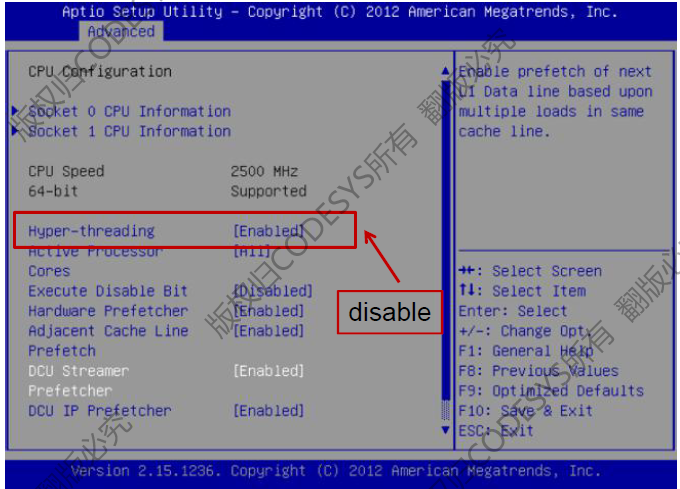 关闭BIOS 中激活的所有节能选项
- Intel Speed Step动态节能技术
- EIST智能降频
- C-States省电模式
- PowerNow动态调整CPU的工作频率和电压
- Hibernation休眠
- MWAIT
停用可能导致系统管理中断的所有内容
- BIOS self tests BIOS自检
- USB Legacy Device Support 传统USB设备支持
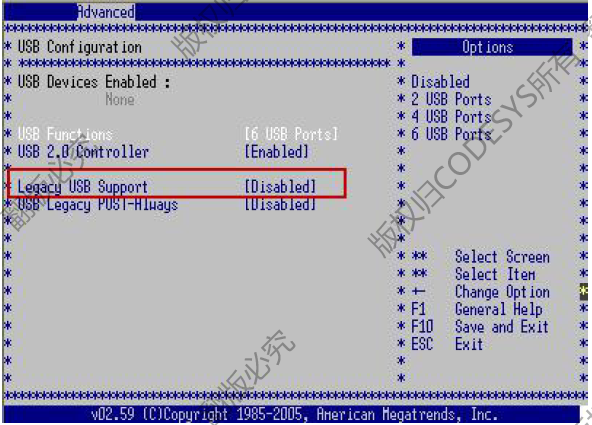
然后就可以安装 RTE，官网下载需要的 runtime 安装包，注意区分 x86 还是 x64 设备。我下载的是 **CODESYS Control RTE SL （×86Windows 实时）。
官网下载地址：http://store.codesys.cn/codesys/store/index.html
在工控机上解压并安装需要的 RTE runtime，基本都是直接下一步即可，期间注意选择带不带 softmotion：
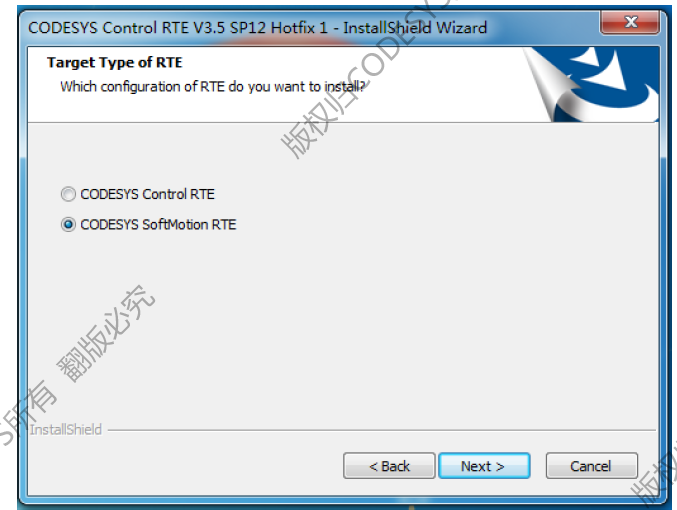
Control RTE 文件路径：C:\Program Files\CODESYS\CODESYS Control RTE3
Control RTE 安装路径：C:\ProgramData\CODESYS\CODESYSControlRTEV3
网卡驱动
支持的网卡：
Systems with Windows and CODESYS Control RTE (Real-time SoftPLC):
- Realtek® 8139 (CmpRTL81x9Mpd)
- Realtek RTL8139 and compatible Ethernet-Controller, as well 8100/8110
- Realtek 8169 (CmpRTL8169Mpd)
- Realtek 8169/810, RTL8111B / RTL8111D
- Intel® EtherExpressPro1000 (CmpEt1000Drv) --- All gigabit adapters from Intel
- Intel EtherExpress PRO/100 (CmpEt100Drv) --- All 100 Mbit adapters from Intel
一般情况下 intel 的千兆网卡都可以安装 CmpEt1000Drv 驱动。
首先进入设备管理器，选择需要更新 codesys 驱动的网卡，右键选择更新驱动：
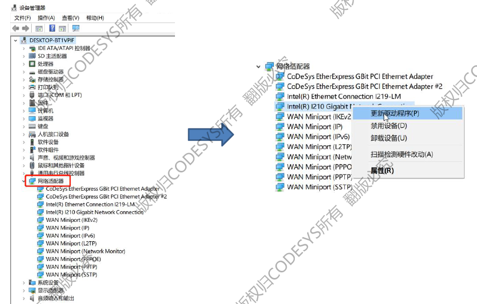
选择从本地查找驱动程序：
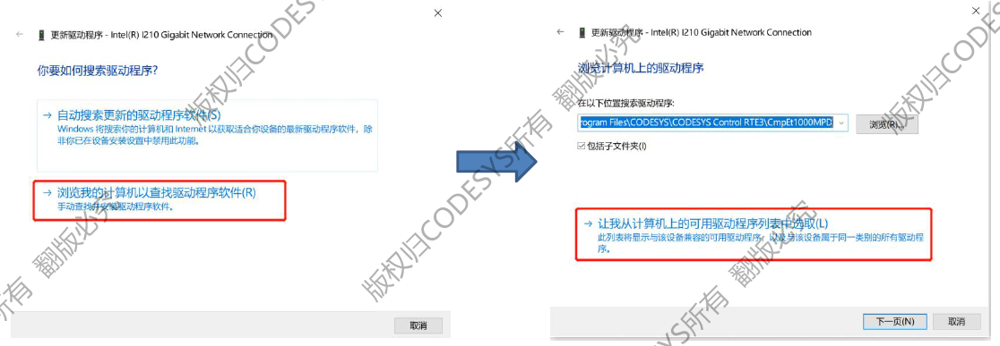
选择从磁盘安装，从 RTE 文件路径找到对应的驱动目录并安装：
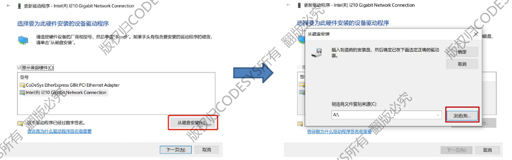
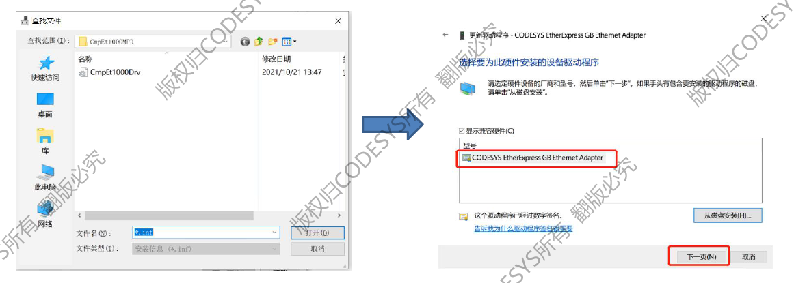
右键选择 plc configuration：
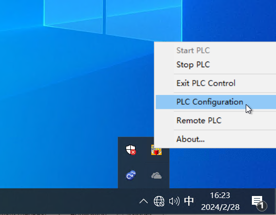
在 components manager 中在最后一个空行中填入安装的驱动名称，这里我填的是 CmpEt1000Drv：
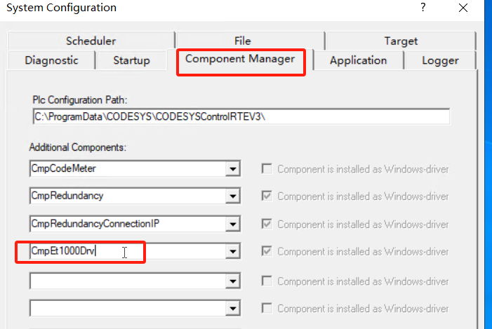
确定并重启 plc 即可完成网卡驱动的安装及配置。
添加 ethercat master
在codesys 开发项目中进行以下操作。
- 建立一个支持 softmotion 的设备
- 添加 ethercat master softmotion 主站 （会自动添加 ethercat_task 任务 不可删除)
- 扫描并连接到控制器
- 配置 ethercat master 网卡，RTE 版 runtime 需要选择适配 codesys 的网卡
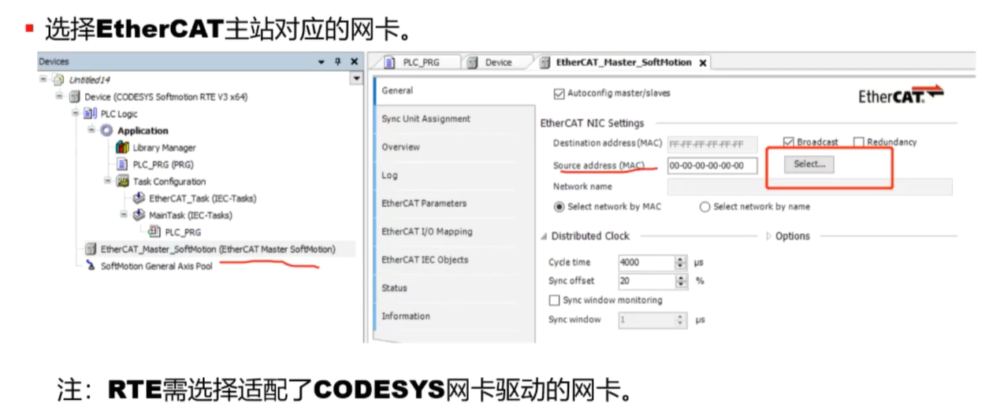
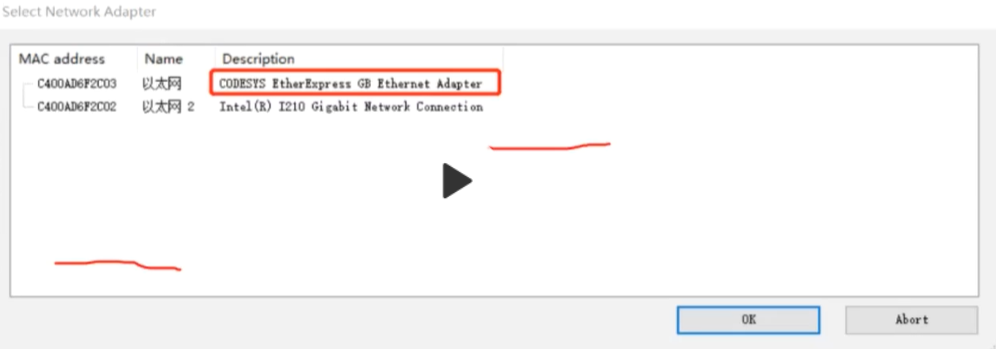 - 下载程序到控制器，如果上面没有在 components manager 中添加网卡组件的话，这里下载会报错
- 退出登录 扫描从站并添加
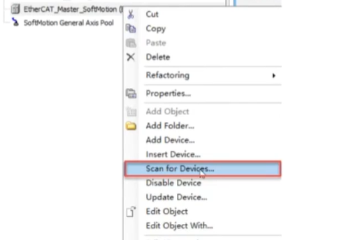
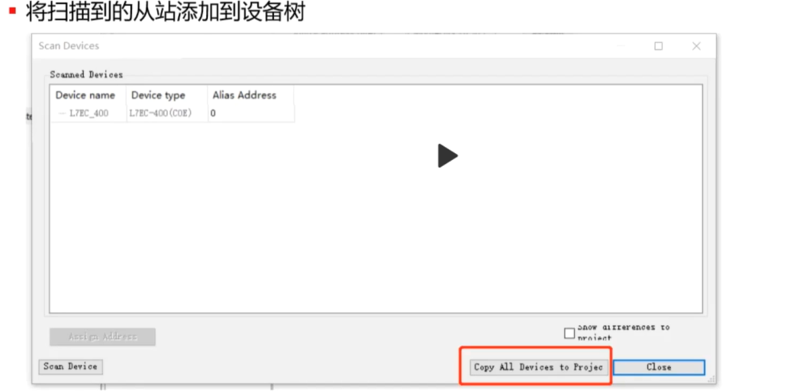 - 如果设备描述文件没有在系统内置库中 需要手动导入描述文件然后才能扫描识别
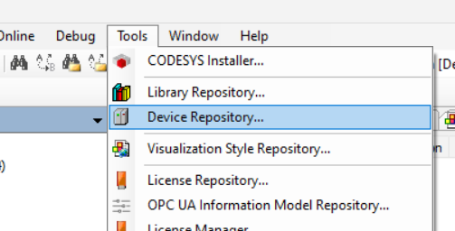
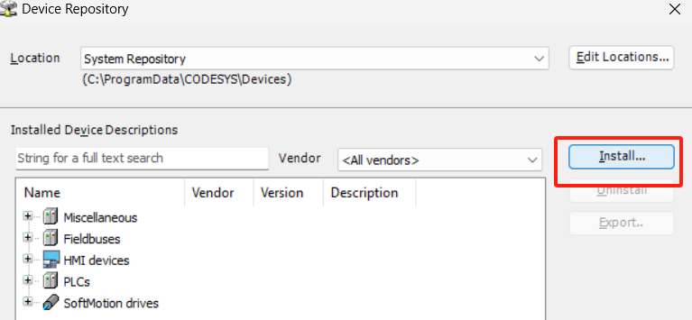
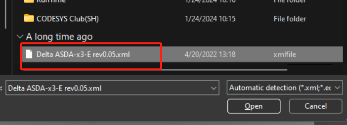 - 给扫描到的从站添加 cia402 轴
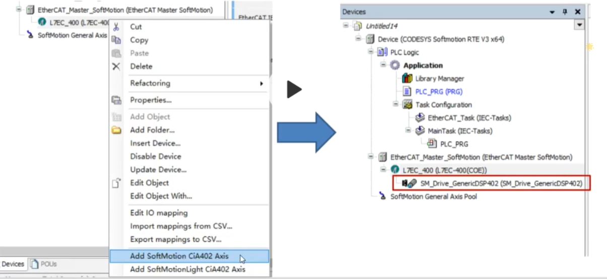 - 配置电子齿轮比
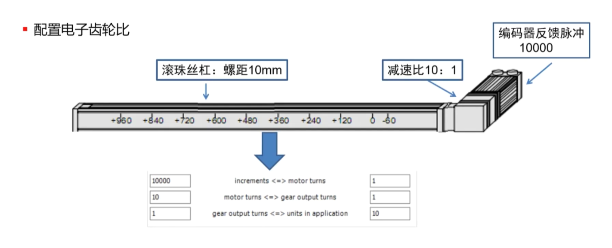
以上就是 RTE runtime 版添加 ethercat master 主站的简单方法。
参考链接：
Control RTE SL and profinet connections
标签：无